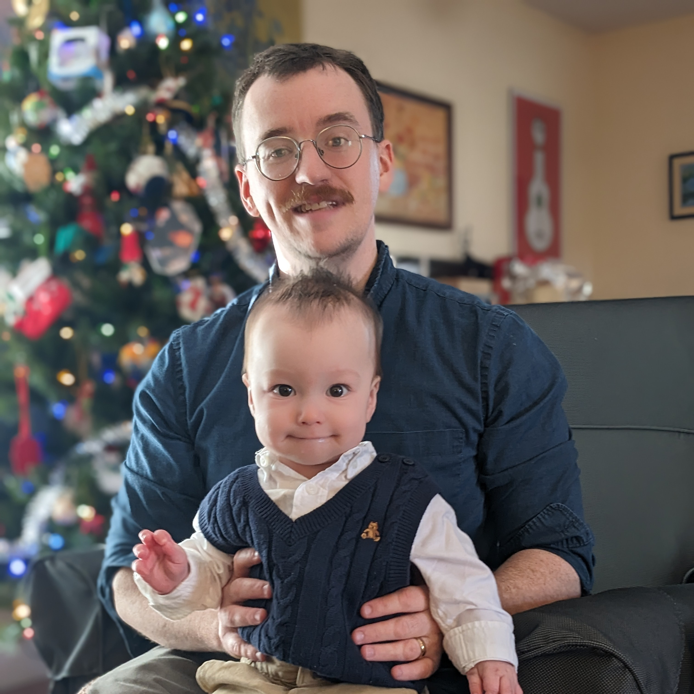

About me
 Me and my younger child, Christmas 2023. I grew up in Halifax, Nova Scotia, and attended Dalhouse University. For my undergraduate research I worked in the Aerosol and Cloud Group on the link between cosmic ray flux and cloud formation, and improving modelling of sea-salt aerosol production. After completing my BSc I moved into the Quantum Theory Group and worked on translating classical problems of interest (mostly 3-SAT) onto Quantum computers, culminating in my thesis Compiling Programs for an Adiabatic Quantum Computer.
In addition to various stints as a software developer, from 2015-2017 I was the co-founder and lead programmer at Two and Thirty Software working on Hairy Little Buggers. From 2017-2018 I was the technical lead at the Klick Media Data Science team. Currently, I work as a Senior Software Developer at Humi.